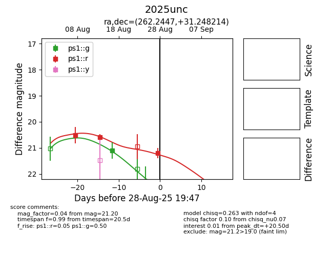

Target 2025unc at 2025-08-26 17:27, see:
YSE: ziggy.ucolick.org/yse/transient_detail/2025unc
alt names
2025unc (yse)
coordinates:
equatorial (ra, dec) = (262.2447,+31.24821)
galactic (l, b) = (55.0013,+30.29366)
photometry
last ps1::g=21.10, ps1::r=20.59
1 ps1::g, 2 ps1::r detections
